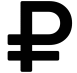
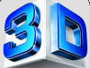
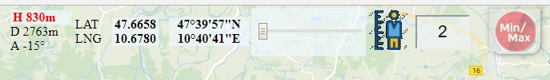
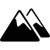
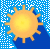
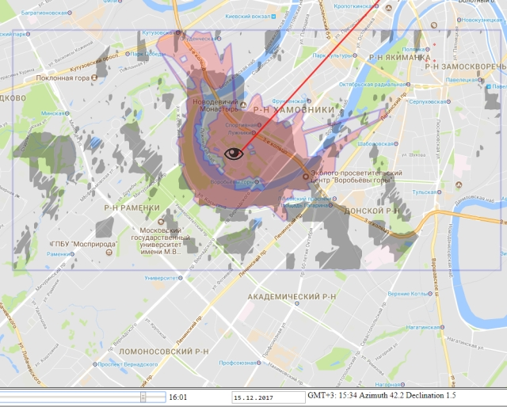

Use Mouse to change Map Views
To change "sharpness" - range slider on left top of the screen
On mobile devices, try not to use the built-in browser
Verified result - on Google Chrome
Geodata Imaging Software
1. Zone of visibility from a certain point and height.
2. Panorama of the horizon
3. Graph of heights in the direction
4. A map of heights indicating the lowest and highest points
5. Shadow Map
6. Graph of heights along the polyline
After opening the page, the map is positioned in your current location, if not - somewhere in the Alps.
In the case of URL with pre-set coordinates - according to them.
After this, the coordinates can be changed either manually, dragging the map by mouse left button pressed,
or specify the latitude / longitude coordinates or address by clicking the tab  at the left of the screen.
at the left of the screen.
Click 
The torn layer appears, representing a surface visible from the point of the Eye.
The painted areas are zones of visibility. What is not painted over is hidden from view: behind an obstacle, in a low place or beyond the horizon.

You can change Point of View position, dragging the Eye.
To change the height of the observer use slider to the left of 
Indicators

H - altitude in the point under the cursor (indicated in the measured areas)
D is the distance from the observer's point  to the position of the cursor
to the position of the cursor
A - the azimuth from the observer's point to the position of the cursor
LAT - Latitude
LNG - longitude

A rectangle appears in the upper right corner.
Drag it with the mouse, green and red text markers indicate the minimum and maximum heights
for the area bounded by a rectangle.
 Setting options
Setting options
Angular accuracy -  width of the calculation sector.
width of the calculation sector.
Iteration steps quantity  - With larger values - more accurate the result
- With larger values - more accurate the result
But - at a low computer processor speed, the picture will slow down.
Background transparency and color menu  - for the zone of visibility.
- for the zone of visibility.
Change if the color of the card itself merges with the overlay

Panorama of the horizon
To obtain a more detailed picture, it is necessary to reduce the Angular accuracy (see above)
or get the maximum resolution for a given position and height by clicking the Max button in the lower right corner of the screen.
There you can change the view sector
To the left of the panorama, the maximum and minimum angles of visibility are indicated.
With a flat terrain, the picture will be more different from the real one.
 Height chart. The green vertical bar indicates the horizon point
Height chart. The green vertical bar indicates the horizon point
 Topography. More pale / greener the layer - smaller the height. Redder - more.
Topography. More pale / greener the layer - smaller the height. Redder - more.
The points with the maximum and minimum measured heights are indicated.
To delete a layer, press  again
again
 Shadow
The slider on the bottom left is the time. From dawn to dusk.
To the right is the task of the date.
World time is determined by geographic coordinates, so it can differ from the real one.
The shift from Greenwich is indicated after GMT
 Graph of heights along the polyline.
Graph of heights along the polyline.
Set the beginning of the line by clicking the left mouse button. Add points.
Complete the line - right mouse button.
The line can be edited by stretching over the top.
Example. Pink - zone of visibility. Gray is a shadow. Red line - the direction from the sun

You can copy and save the link in the address bar of the browser (full address string !).
Then when you click on this link, the map will be opened in the saved position.
Ctrl-M in 2D mode will open a tab with a map in graphical view.
You can copy and save (Right mouse button - Save image)
UWAGA - whatthepeak tab in the browser must be RIGHT
Ctrl-I will open the OBJ code tab for the 3D models.
E-address